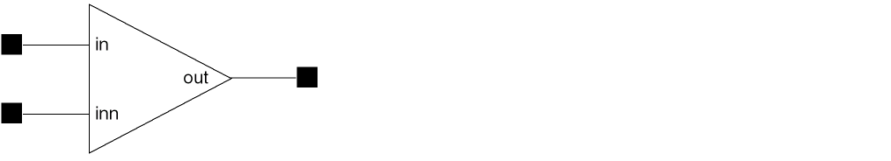

Uses of the Comparator Macromodel
You can use the comparator macromodel by doing the following:
- Defining the common specification sheet values, available in most semiconductor product catalogs.
- Placing the comparator macromodel symbol in your schematic.
- Defining the CDF parameter values and by using default values for parameters that you do not set.
Electrical effects are modeled accurately by this macromodel. However, such a simple circuit might not work as a comprehensive model. The comparator macromodel cannot do the following:
- Model specifications that are not defined as macromodel parameters
-
Model high frequency response
The behavior of the comparator at a frequency higher than 1/(4 × t ds) is not expected to match the circuit measurements. The capacitor of the single time constant circuit is not fully charged. The delay time might not be realistic. - Vary delay time according to the input overdrive voltage
- Model hysteresis effects.
Setup of the Comparator Macromodel into a design
The following figure shows a comparator macromodel symbol.

For proper operation of the macromodel, you need to connect the following three I/O pins:
Comparator Macromodel Parameters
There are 12 parameters you can use to describe the behavior of the comparator macromodel.
| Property | Typical Value | Description |
|---|---|---|
Related Topics
Introduction to Functional Block Library
Return to top